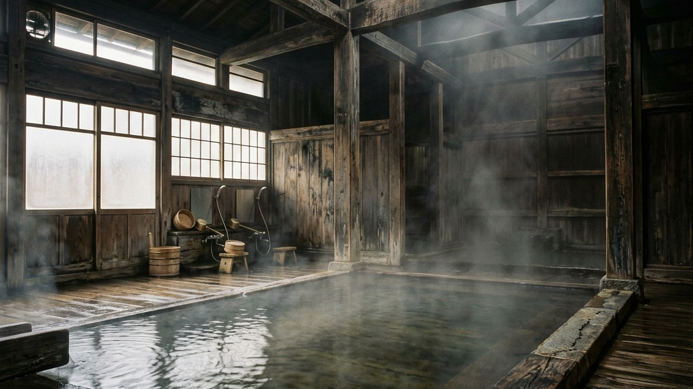
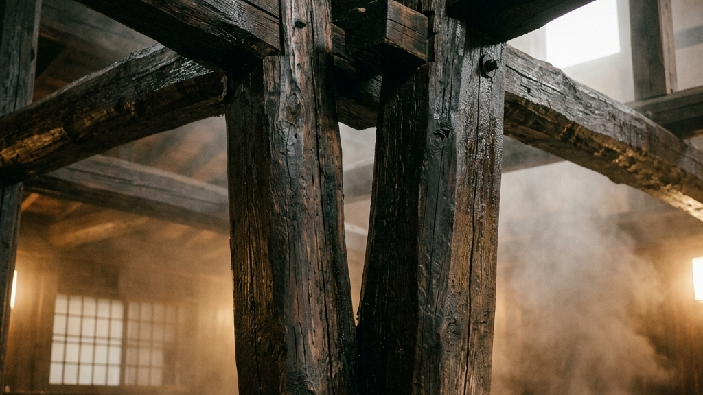
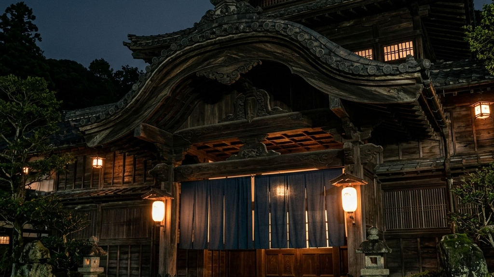
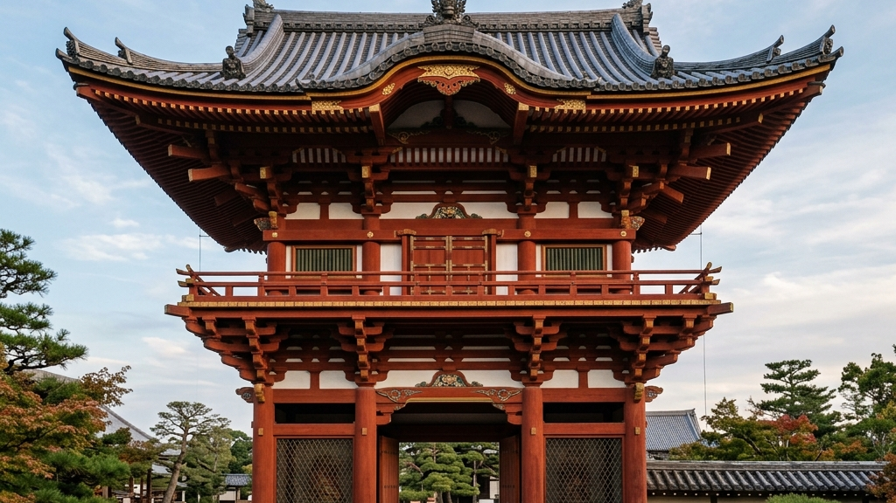
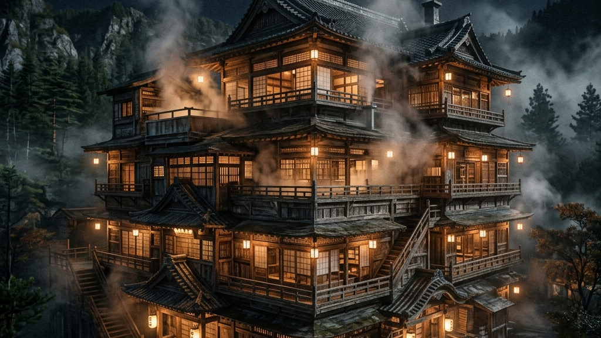
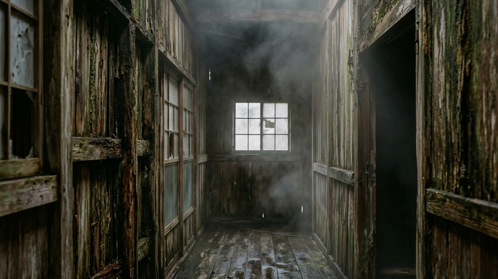
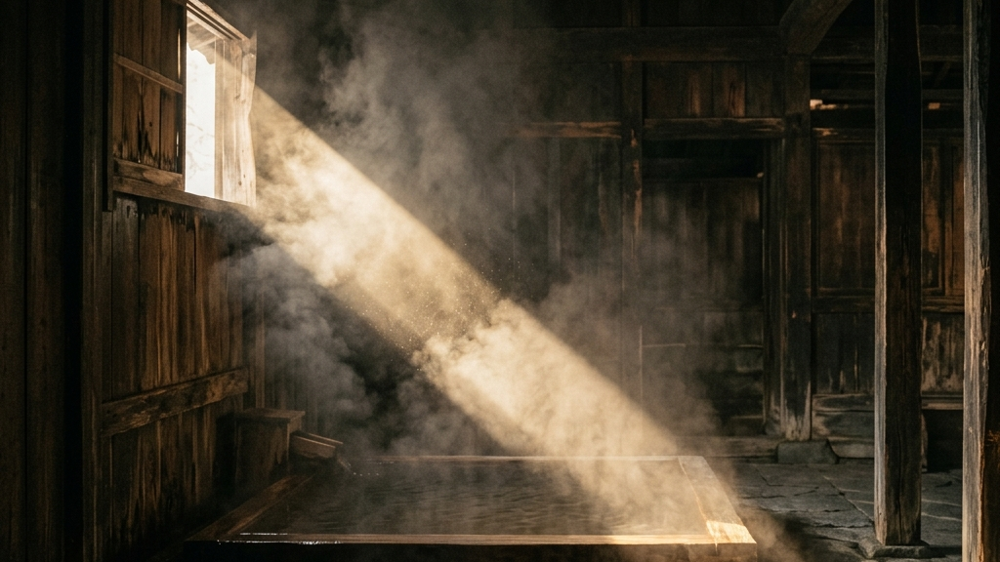
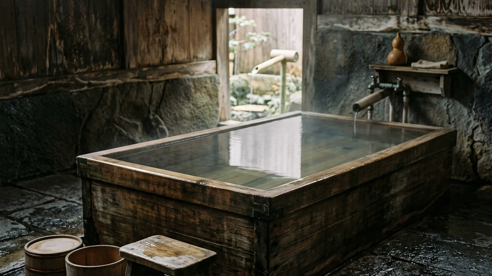
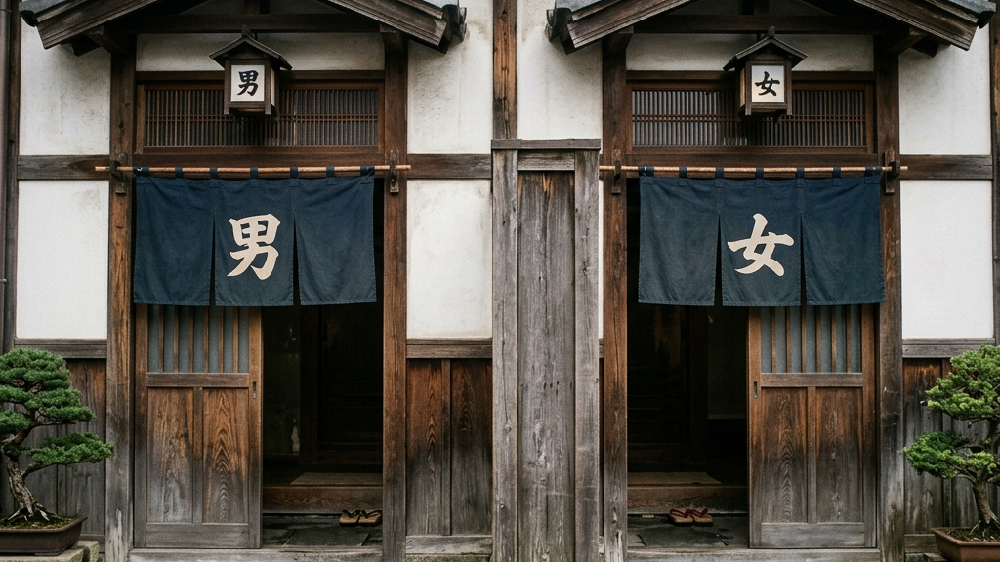

日本列島の深層を巡る血脈のように、各地に点在する温泉地。その中心には、単なる入浴施設という枠組みを超え、地域の歴史と美学を無言で体現する「共同浴場」が鎮座している。明治から大正にかけて建立されたこれらの建築物は、効率化という現代の暴力を退け、今なお圧倒的な熱量と静謐な空間を保ち続けている。レトロ建築としての強烈な意匠と、源泉かけ流しの確かな泉質を併せ持つ三つの共同浴場を解剖し、非効率の先にある「記憶の継承」という究極の価値を浮き彫りにする。
【本稿で紐解く3つの核心】
それは、湯煙という曖昧な輪郭の奥に潜む、極めてソリッドな建築の哲学である。

なぜ我々は、最先端のスパ設備ではなく、軋む床板と薄暗い脱衣所を持つ古い共同浴場に惹かれるのか。そこには、ただ古いという感傷を凌駕する、建築としての純粋な強度が介在している。
近代化の波が日本全土を覆い尽くし、あらゆる施設が鉄筋コンクリートへと置換されていく中で、一部の共同浴場だけが奇跡的にその木造の躯体を維持し続けた。それは偶然の産物ではない。記憶を「翻訳」する建築がそうであるように、明治・大正期に建てられた共同浴場は、その地域の人々にとって単なる入浴の場ではなく、生活のインフラであり、コミュニティの核であった。だからこそ、幾度もの修繕と改築という泥臭い手仕事を繰り返し、時代を凍結させたかのような圧倒的な木造建築の生態系が現代に残されたのである。
地域住民の衛生保全と交流の場として、簡素な木造や竹屋根葺きの浴場が各地で産声を上げる。
観光客の増加や地域の威信をかけ、唐破風造や楼門といった宮大工の粋を集めた建築へと進化を遂げる。
共同浴場が他の歴史的建築物と決定的に異なるのは、「現役で使用され続けている」という生々しい事実である。沈黙の躯体が語り始める時に私たちが感じるような、人が触れ、使い込むことによってのみ付与されるエイジングの美学がそこにはある。源泉から絶え間なく溢れる湯気は、建物の木材に適度な湿気を与え、乾燥による倒壊を防ぐ防波堤として機能してきた。湯と木材、そして人間の体温という三つの要素が絡み合い、極めて特殊な保存環境を形成しているのだ。
「保存とは凍結ではない。日々削られ、消費される中でこそ磨かれる真理がある」
共同浴場のアーキテクチャに潜む哲学
レトロ建築と聞くと、私たちは「観光客向けのテーマパーク」を想像しがちだ。しかし、真に価値のある共同浴場は、大衆的な観光地化に迎合することを拒絶し、あくまで地域住民のためのインフラとしての強度を死守している。圧倒的な日常性の中に突如として現れる非日常の意匠。このパラドックスこそが、共同浴場におけるレトロ建築の最も危険で魅惑的なエッセンスなのである。

大分県別府市。湧出量日本一を誇るこの巨大な温泉郷の路地裏に、周囲の空気を圧するような異様な存在感を放つ建築物が立ち塞がる。それが1879年（明治12年）創設の「竹瓦温泉」である。
創設当初、この浴場は簡素な竹屋根葺きの小屋に過ぎなかった。「竹瓦」という名称は、その後の改築で屋根が瓦葺きへとアップグレードされたことに由来するという。現在我々が目にしている威容は、1938年（昭和13年）に建てられたものだ。正面に構えられた「唐破風造（からはふづくり）」の屋根は、本来であれば神社仏閣や城郭、あるいは格式高い遊郭などに用いられる特権的な意匠である。それを、市井の人々が日々汗を流す共同浴場に採用したという事実に、当時の別府の人々の「湯に対する異常なまでの美意識と執念」が透けて見える。
暖簾をくぐり内部へ足を踏み入れると、そこには昭和初期の時間がそのままパッケージされたかのような、天井の高い広大なロビーが広がる。湯上がりに火照った体を冷ますこの空間は、単なる待合室ではない。見知らぬ他者同士が、裸で同じ湯に浸かったという謎の連帯感を抱きながら、静かに時を共有する「余白の空間」である。
現代のスーパー銭湯のように、マッサージチェアやテレビ、煌びやかな自動販売機が立ち並んでいるわけではない。あるのは使い込まれた木製のベンチと、高い天井で反響する人々の低いくぐもった声だけだ。この「何もない」ことの豊かさこそが、現代社会において極めて贅沢な体験となっている。
竹瓦温泉を語る上で欠かせないのが、名物の「砂湯」である。浴衣を着たまま砂の上に横たわると、砂かけさんと呼ばれる熟練の職人が、温泉でたっぷりと温められた重い砂を容赦なく体にかけていく。最大8名が並んで体験できるこの砂湯は、心地よいというよりはむしろ、大地の熱と重量で体を強制的に制圧されるような、心地よい暴力性に満ちている。
竹瓦温泉の二つの顔（泉質）
異なる二つの泉質を一つの建物内で管理し、しかも源泉かけ流しで提供し続けること。それは設備管理という観点から見れば、非効率の極みである。しかし、時間を纏う美学が教えてくれるように、機能的価値を超越した無駄の蓄積こそが、模倣不可能な究極のラグジュアリーへと昇華する。竹瓦温泉は、その泥臭い維持管理の連続によって、別府という温泉都市の魂を今に繋いでいるのだ。

佐賀県武雄市。1300年の歴史を持つとされる古湯の入り口に、突如として鮮烈な朱塗りの門が姿を現す。まるで竜宮城への入り口かのような異彩を放つこの建造物が、武雄温泉のシンボル「楼門」である。
1915年（大正4年）に完成したこの楼門は、東京駅や日本銀行本店などを手がけた日本近代建築の巨匠、唐津市出身の辰野金吾の設計によるものだ。特筆すべきは、釘を一本も使わずに組み上げられた「天平式楼門」と呼ばれる独創的な構造である。沈黙の躯体が語り始める時、近代西洋建築の礎を築いた辰野が、なぜ故郷に近いこの地で和風建築の極致とも言える釘無しの木造門を設計したのか。そこには、単なる技術的挑戦を超えた、建築家としての「遊び心」と「哲学」が隠されている。
四隅に彫られた「子（ねずみ）、卯（うさぎ）、午（うま）、酉（とり）」の透かし彫り。
復原された東京駅南北ドームの天井に残る、残りの8つの干支のレリーフ。
楼門と東京駅。遠く離れた二つの建築物を合わせることで、初めて「十二支」が揃う。この時空を超えた壮大な暗号は、100年近い時を経た2013年、東京駅の復原工事に伴う調査でようやく「符合」が確認された。建築は単なる物理的な箱ではなく、時間を超えて設計者の意図を伝達するメディアになり得ることを、辰野金吾は見事に証明して見せたのだ。2005年、この楼門は国の重要文化財に指定されている。
楼門の奥に広がる複数の大衆浴場。その中に、1876年（明治9年）に建築された「元湯」が存在する。現在使用されている木造建築の温泉施設としては日本最古といわれるこの浴場は、博物館に陳列される骨董品ではない。アルカリ性単純温泉の柔らかな湯をたたえ、今この瞬間も地元住民の疲れを癒やし続けている現役のインフラである。
| 浴場の名称 | 物理的特徴 | 概念的特長 |
|---|---|---|
| 元湯・蓬莱湯 | 明治初期の木造建築・大衆浴場 | 地域住民の日常的な衛生と交流の核 |
| 殿様湯・家老湯 | 市松模様の大理石風呂（貸し切り） | 江戸時代の領主専用という階級と権威の残滓 |
「大衆」と「権威」。相反する二つの概念が同じ敷地内で共存し、湯というフラットな要素で結び付けられている。武雄温泉の敷地を歩くことは、近代日本の階層社会と、それを溶かしていく温泉文化の変遷を肌で感じ取ることに他ならない。

愛媛県松山市。日本書紀にもその名が記され、有馬、白浜と並んで日本三古湯の一つに数えられる道後温泉。その圧倒的な歴史の重みを一身に背負い、町の中心で巨大な木造三層楼の威容を誇示しているのが「道後温泉本館」である。
1894年（明治27年）に改築された本館（神の湯本館）を中心に、増改築を繰り返しながら複雑で迷路のような現在の構造へと拡張してきた。特筆すべきは、1994年（平成6年）にこの本館が「国の重要文化財」に指定されたという事実である。
寺社仏閣や城郭ではなく、市井の人々が裸で集う「公衆浴場」が国の重要文化財に指定されたのは、これが日本で初めてのケースであった。文化財活用の非観光型モデルが現代でこそ議論されているが、道後温泉本館はその30年も前に「生きたまま保存する」という文化財の新たなパラダイムを切り拓いた先駆者なのである。
「保存のために機能を停止させるのは、建築の死を意味する。使い続けることでしか守れない命がある」
道後温泉本館が体現する動的保存の哲学
本館の最上部に鎮座する「振鷺閣（しんろかく）」。赤いギヤマン（ガラス）がはめ込まれたこの塔屋からは、毎朝6時に開館を告げる「刻太鼓（ときだいこ）」が鳴り響く。環境省の「残したい日本の音風景100選」にも選ばれたこの音は、単なる営業開始の合図ではない。
それは、スマートフォンで常に分秒単位のスケジュールに追われる現代人に、「温泉街における時間の流れ方」を強制的にリセットさせる装置である。視覚だけでなく、聴覚からも街全体を支配する。道後温泉本館は、建物そのものが街の中心的な時計塔であり、リズムの源泉として機能しているのだ。
本館の構造の中で最も特異なのが、1899年（明治32年）に建てられた皇室専用の浴室「又新殿（ゆうしんでん）」である。桃山時代風の優雅な建築様式を持ち、極彩色で描かれた襖絵や金箔張りの壁など、贅の限りを尽くした意匠が施されている。大衆が芋洗いのようにお湯を楽しむ「神の湯」と同じ屋根の下に、皇室という極限の権威のための空間が、物理的かつ厳重に隔離されて存在している。
この重層的な建築構造こそが、道後温泉本館を単なる巨大な銭湯ではなく、近代日本の社会構造を凝縮した一つの「都市」として成立させている最大の要因である。

ここまで、明治・大正期から受け継がれる三つの共同浴場が持つ、レトロ建築としての輝かしい意匠と文化的価値を紐解いてきた。しかし、これらの建物を「現役の公衆浴場」として維持し続けることは、決して美しいだけの物語ではない。そこには、現代の合理主義や資本主義経済とは完全に逆行する、血の滲むような泥臭い闘いと非効率性が存在している。
共同浴場が直面する最大の敵は、皮肉なことにその魅力の源泉である「温泉そのもの」である。アノニマスの痕跡と不完全なる美が示すように、物質は時間を吸収し劣化していく。特に、塩分や硫黄分、鉄分などを豊富に含む強烈な源泉は、木造の柱や梁、そして配管設備を容赦なく侵食し、腐食させる。
竹瓦温泉や武雄温泉、道後温泉のいずれもが、数年おきの大規模な修繕工事を余儀なくされている。近代的なスーパー銭湯であれば、劣化したFRP（繊維強化プラスチック）の浴槽を取り替えるだけで済むかもしれない。しかし、重要文化財やそれに準ずる歴史的建造物の場合、使用する木材の選定から宮大工による特殊な工法の手配まで、通常の何倍ものコストと時間が要求されるのである。
レトロ建築維持のトリレンマ
さらに深刻なのが、現代社会が施設に求める「安全性」と「利便性」とのコンフリクトである。大地震が頻発する日本において、築100年を超える木造建築の耐震化は喫緊の課題だ。道後温泉本館が現在行っている大規模な保存修理工事（営業を継続しながらの異例の工事）も、その大部分の目的は耐震補強である。
また、急勾配の階段や段差の多い古い構造は、高齢化が進む現代のバリアフリー基準には到底適合しない。古いものをそのまま残すことは、時に現代社会からの「切り捨て」を意味する。それでもなお、最新のエレベーターやスロープを強引に設置して空間の美学を破壊するのではなく、不便さを不便さとして受け入れる「余白」をどう残すか。各自治体や運営者は、常にこの二律背反の境界線で苦悩しているのだ。
我々利用する側にも、パラダイムシフトが求められている。「シャワーの水圧が弱い」「脱衣所が寒い」「階段が急である」といった現代の快適性からの減点法でこれらの施設を評価することは、極めて浅薄な行為である。摩擦のないツルツルとした快適空間は、思考を停止させる。逆に、不便さや非効率な動線、剥き出しの木の肌触りといった「空間の摩擦」こそが、私たちの鈍った感覚を呼び覚まし、思考体力を鍛え上げるのである。共同浴場が抱える現代的課題は、そのまま「私たちが何を豊かさと定義するか」という本質的な問いを突きつけている。

竹瓦温泉の唐破風造、武雄温泉の釘を使わない楼門、道後温泉の三層楼と皇室専用浴室。これら明治・大正期に建造されたレトロ建築の共同浴場は、単なるノスタルジーの消費対象ではない。時代に抗う「工芸的なるもの」の真髄に通底するように、効率化という波に抗い、圧倒的な熱量と非効率性を抱えながら今も呼吸を続ける「生きたヘリテージ（遺産）」である。
現代のビジネスや社会構造は、あらゆるプロセスから「摩擦」を取り除き、最短距離で結果（快楽や利益）に到達することを正義としてきた。ボタン一つで適温の湯が張られ、全館空調が効いたスパ施設は確かに快適だ。しかし、その無菌室のような空間からは、地域固有の歴史も、職人の泥臭い執念も、そして人々が裸で交わした生々しいコミュニケーションの記憶も生まれない。
あえて重い木の引き戸を開け、熱すぎる源泉に身を沈め、軋む床板を歩く。その一連の身体的負荷（摩擦）こそが、私たちが「今、この固有の空間に生きている」という確かな実感を与えてくれる。不便さを排除した先にあるのは、どこへ行っても同じ風景が広がる均質化された退屈な未来だけだ。
「真のラグジュアリーとは、機能的価値を超越した非効率の蓄積の中にしか宿らない」
伝統を未来へ引き継ぐための絶対条件
私たちがこれらの共同浴場から学ぶべきは、単なる建築様式の美しさではない。時代がどれほど移り変わろうとも、自らの核となる価値（源泉と地域への貢献）を絶対に手放さないという、運営者たちの狂気にも似た「覚悟」である。古い建物を維持することは、新しい建物を建てるよりも遥かに多大なコストと精神力を要求する。それでもなお、彼らはその十字架を背負うことを選んだ。
ビジネスにおいても、組織の構築においても、同じことが言える。波風の立たない優しさや、数字だけの効率化を追求する薄っぺらいマネジメントは、強烈な危機が訪れた際に容易に崩壊する。相手が傷つくリスクを背負ってでも、あえて厳しい摩擦を起こし、泥臭く本質を追求し続けること。その極限のプレッシャーの中でしか、真の思考体力や次世代へと継承されるべき「強い文化」は育たないのだ。
湯煙の向こう側にそびえ立つ、明治・大正のレトロ建築。それは、効率化という病に侵された現代の私たちに対し、無言で、しかし圧倒的な熱量を持って「何を残し、何を捨てるのか」を問いかけ続けている。

現代の我々は「共同浴場」の厳密な定義を見失いつつある。スーパー銭湯や観光地向けの日帰り温泉施設と、ここで紐解く共同浴場（竹瓦温泉や道後温泉など）を分かつ決定的な境界線は、設備の新旧ではない。それは「誰が、何のためにその湯を維持しているのか」という所有と管理の哲学にある。
一般的な銭湯（公衆浴場）が経営者による営利事業として成立しているのに対し、本来の共同浴場は「湯仲間」と呼ばれる地域住民の組合（コミュニティ）によって自治・管理されているケースが大半である。例えば、日本を代表する温泉地である草津温泉には「共同浴場 草津」と検索されるほど数多くの無料浴場（白旗の湯など）が存在するが、これらはすべて地元住民の生活インフラとして町や組合が維持しているものだ。
近年、隈研吾氏の設計で話題となった銀山温泉の「共同浴場 しろがね湯」のように、建築家によるモダンなアプローチで再生を図るケースも増えている。しかし、どれほど外装が洗練されようとも、共同浴場には「湯船の縁に腰をかけない」「体を流してから入る」「源泉の蛇口を勝手にいじらない」といった、暗黙の、時に厳格なローカル・ルールが存在する。
観光客からすれば「閉鎖的でうるさい」と映るかもしれない。だが、この心理的・社会的摩擦こそが、彼らの生活インフラを無秩序な観光消費から守るための不可欠な「防波堤」なのである。金さえ払えばすべてのサービスを享受できると錯覚している現代人に対し、共同浴場は「郷に入っては郷に従え」という健全な相互敬意のあり方を突きつけている。

レトロ建築の意匠を語る上で避けて通れないもう一つの歴史的ファクトが、「男女の分離」という空間構造の変容である。「共同浴場 男女」「共同浴場 混浴」という検索が示す通り、かつての日本の風呂文化と現代のそれとの間には、国家主導の巨大なパラダイムシフトが介在している。
江戸時代までの日本の共同浴場や銭湯は、基本的には男女混浴が当たり前の風景であった。着物を脱ぎ、同じ湯船で身分や性別を超えて言葉を交わす。それは極めてオープンでフラットな日本独自の文化であった。しかし、幕末にペリーをはじめとする欧米列強が日本を訪れた際、彼らはこの混浴文化を「野蛮で非文明的な風習」として激しく非難した。
これに焦った明治新政府は、欧米から「文明国」として認められ不平等条約を改正するために、1869年（明治2年）以降、幾度にもわたって「混浴禁止令」を発布する。この法的な介入が、温泉建築の構造に決定的な断絶をもたらしたのである。
竹瓦温泉や道後温泉が明治後期から昭和初期にかけて大改築を行った背景には、この「男女を物理的に分離しなければならない」という近代国家からの強烈な要請があった。入り口を二つに分け、脱衣所を壁で分断し、浴槽を左右対称（シンメトリー）に配置する。
一つの巨大な空間であった湯屋は、中央に引かれた見えない境界線によって真っ二つに裂かれた。しかし、宮大工たちはただ壁を作っただけではない。外観の唐破風や楼門の意匠を損なうことなく、むしろ「二つの入り口を持つこと」自体を左右対称の新たな美学へと昇華させたのである。私たちが今日「レトロで美しい」と感嘆する共同浴場の建築構造は、日本が西洋化という巨大な圧力の中で、自らの文化を必死に再定義し、適応しようとした「軋轢の痕跡」そのものなのだ。
「建築は時代を映す鏡ではない。時代と格闘し、血を流した痕跡の結晶である」
国家の介入と職人の意地が交差する空間
Reference:
かわいい浴衣を着て巡りたい 明治・大正から続く「レトロ建築」が“映え”すぎる 雰囲気だけじゃなく泉質も良い“共同浴場”3選（VAGUE）
伝統を身に纏い、1,000年先の未来へ遺す。Kakeraが織り上げる西陣織アロハシャツの哲学と私たちの物語は、CONCEPT、Kakera Aloha、およびABOUTよりご覧いただけます。
```html ```